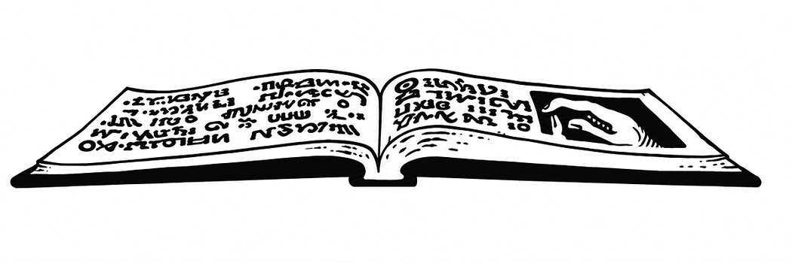

崇高功绩之书 · Book of Exalted Deeds
这本圣书是献给善良阵营牧师的神圣著作。阅读全书需 1 周；读完后，善良牧师的感知提高 1 点，并获得足够的经验值，使其恰好提升至下一个经验等级。既非善良也非邪恶的牧师阅读后不会失去经验值；邪恶牧师会失去 20,000–80,000 点经验值（总经验值可能因此变为负数），必须恢复到原等级，但不会跌至 1 级以下。中立牧师会失去 1 个完整经验等级，降至仍能维持当前等级的最低经验值；此外还必须通过魔法手段恢复，或在 2 次冒险中交出其获得经验值的 50%，同时失去相应经验值，否则将不再获得经验值。阅读或经手此书的战士不受影响。阅读此书的魔法师会失去 1 点智力，除非通过对抗魔法的豁免检定；即使成功，也会失去 2,000–20,000 点经验值。经手或阅读此书的盗贼会受到 5–30 点伤害，且必须通过对抗魔法的豁免检定，否则敏捷降低 1 点，并有 10%–60% 的概率放弃盗贼职业，转而成为善良牧师（若感知为 15或更高）。行刺者经手或阅读此书会受到 5–40 点伤害，且必须通过对抗魔法的豁免检定，否则自尽。僧侣不会受到伤害，但也无法理解此书。吟游诗人视同中立牧师处理，失去经验只影响吟游诗人职业。除上述说明外，此文字与其他魔法书籍、法术书、手册或典籍外观无异，必须经过研读。研读后此书消失，永不再现；同一玩家角色也不能从第二次研读中再次获益。
